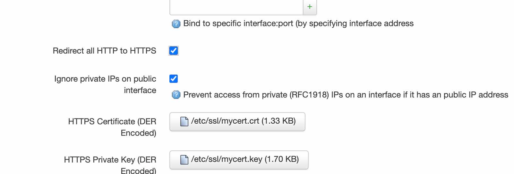

openwrt 配置 LuCI ssl 证书
openwrt 提供了一个 luci 管理界面可以通过图形化的方式进行配置管理。我们通过 lan 网地址 http 访问 luci 界面，会有一个提示不安全的链接，一般浏览器提供了一个跳过选项可以忽略警告。
但是当我们通过 wan 口地址访问 luci 界面时，新版的 chrome 会强制拒绝访问 http 不安全的链接，如果网址不支持 https 访问页面就会无法打开，从而我们就无法通过外网访问 luci 界面了。
首先注意如果想要从 wan 口通过访问 luci 界面，需要配置防火墙放行，具体参考：https://blog.niekun.net/archives/1818.html
然后我们给 luci 配置一个 ssl 证书，这样 chrome 浏览器就会放行了。
首先安装相关程序：
opkg update && opkg install openssl-util luci-app-uhttpd
以上我们安装了 openssl 套件和 uhttpd 的 ui 配置接口，可以图形化的方式配置 uhttpd。
下面我们来生成需要的 ssl 证书文件。
首先创建文件 etc/ssl/myconfig.conf：
[req]
distinguished_name = req_distinguished_name
x509_extensions = v3_req
prompt = no
string_mask = utf8only
[req_distinguished_name]
C = US
ST = VA
L = SomeCity
O = OpenWrt
OU = Home Router
CN = luci.openwrt
[v3_req]
keyUsage = nonRepudiation, digitalSignature, keyEncipherment
extendedKeyUsage = serverAuth
subjectAltName = @alt_names
[alt_names]
DNS.1 = luci.openwrt
IP.1 = 192.168.1.1可以修改 C (country), ST (state), L (location), O (organization), OU (organization unit) 为你想要的内容。
CN 和 DNS.1 必须是一样的地址，它们表示此证书代表的域名，和 IP 是对应的。如果配置了 luci 界面地址的 hosts，这里就可以定义为对应的域名。之后我们就可以通过访问这个域名来访问 IP。
IP.1 就是 luci web 地址，设置为对应的地址即可。
配置文件保存后返回 ssl 目录：
cd /etc/ssl
执行下面的命令：
openssl req -x509 -nodes -days 730 -newkey rsa:2048 -keyout mycert.key -out mycert.crt -config myconfig.conf
会自动在当前目录下创建 mycert.key 和 mycert.crt 文件。
然后我们先通过 lan 内网访问 luci web 界面，在顶部我们可以看到多了一个 services 菜单，点击其中的 uhttpd 进入配置界面，在 HTTPS Certificate 和 HTTPS Private Key 中分别上传 crt 和 key 文件：
然后点击 save and apply。
重启 uhttpd 服务：
/etc/init.d/uhttpd restart
此时我们使用 chrome 通过 wan 口地址访问 luci web 界面，依然会提示证书有问题，但是有选项链接可以正常进入了。
下面我们将刚才生成的 ssl 文件加入 backup 列表。默认情况下 /etc/config 下的文件会自动进行备份。
我们进入 System → Backup/Flash Firmware，点击 configuration 栏，然后将 /etc/ssl/mycert.crt 和
/etc/ssl/mycert.key 加入列表中，点击 save 即可。
之后我们生成的备份就会包含这些文件。
取消强制 https 转换
默认情况下 uhttpd 的设置会打开 Redirect all HTTP to HTTPS:

此时访问 http 页面也会自动重定向到 https 页面。在本地访问没有什么问题，但是经过测试使用 frp 进行内网穿透将 luci 页面从外网访问时，会出现 redirect too many times 报警，也就是无限重定向了。
因为我的 frp 配置的是 http to https，这样就需要 frp 访问的本地 http 服务而不是 https。
解决方法就是取消勾选 Redirect all HTTP to HTTPS 这一选项，然后重启路由就可以正常通过 frp 访问 luci 页面了。
如果不想取消 https 重定向，也可以通过 frpc 的 plugin_http2https 插件将本地 https 转为 http 然后转发给 frps。具体参考教程：https://blog.niekun.net/archives/539.html
参考链接
How to get rid of LuCI HTTPS certificate warnings
标签：无